Про кухню Китаю
Китайська кухня дуже різноманітна, з багатьма регіональними стилями, серед яких виділяються сичуанська, кантонська, хунаньська та інші. Вона використовує широкий спектр інгредієнтів, таких як рис, локшина, соєві продукти, м'ясо та морепродукти. Популярні страви включають пекинську качку, смажену локшину та різноманітні страви на пару, зокрема баоцзи (булочки з начинкою) та дімсам. Багато страв мають пікантний, кисло-солодкий або гострий смак.
Виберіть країну
↑ Вгору
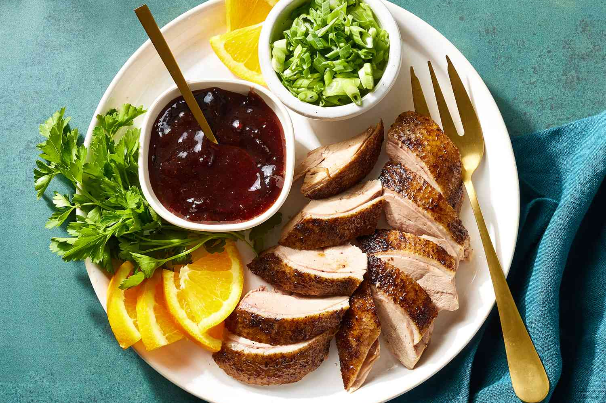
Пекінська качкаЗнаменитий китайський делікатес, що складається з хрусткої шкірки качки та м'якого м'яса, приготованої в спеціальній печі. Подається з тонкими млинцями, соусом хойсін, огірками та цибулею, що дозволяють загорнути качку в млинець і насолодитися її багатим смаком.

Кисло-солодка свининаПопулярна китайська страва, в якій шматочки свинини обваляні в клярі, смажені до хрусткої скоринки та подані в глянцевому соусі, що поєднує кислий оцет і солодкий цукор. Страва часто містить овочі, такі як перець та ананас, і має насичений, збалансований смак.
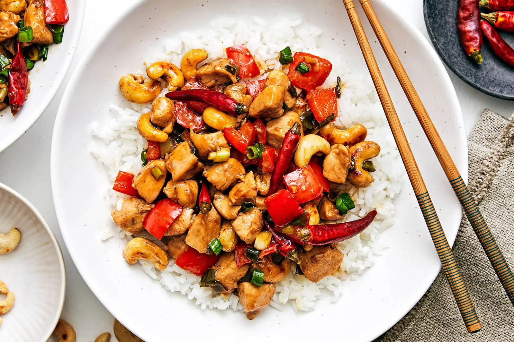
Курка Кунг ПаоКласична китайська страва, що складається з шматочків курятини, обсмажених з арахісом, перцем чілі та овочами в соусі на основі соєвого соусу, рисового оцту та кунжутного масла. Страва має пікантний, солодкуватий смак і характерний хруст від арахісу.

Чар сіуСмажена китайська свинина, приготована за традиційним рецептом з маринадом на основі соєвого соусу, меду, китайського рисового вина та спецій. М'ясо обсмажується до золотистої скоринки, що надає йому солодкувато-солоний смак і яскравий червоний колір.
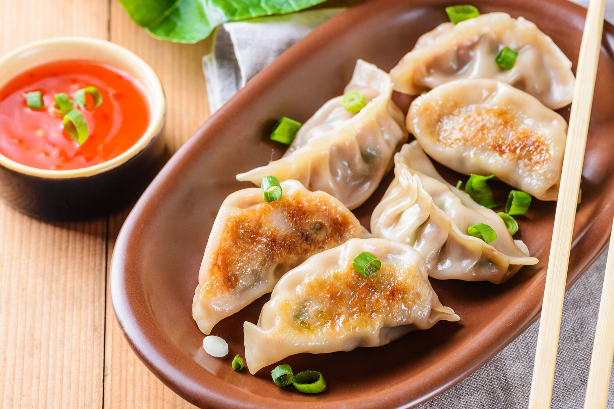
ЦзяоцзиТрадиційні китайські пельмені, які можуть бути вареними, смаженими або на пару. Вони зазвичай наповнені фаршем із свинини, курки або яловичини, з додаванням овочів та спецій. Пельмені подаються з соусом на основі соєвого соусу, оцту та часнику для додаткового смаку.
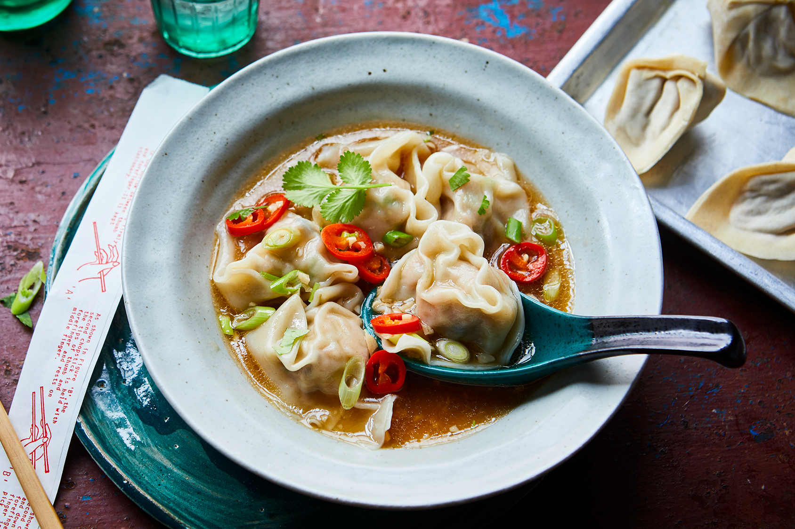
ВонтонКитайські пельмені з тонкого тіста, зазвичай начинені свининою, креветками або овочами. Вони можуть бути вареними в бульйоні або смаженими. Подаються з соусом або в супі, часто з додаванням зелені та спецій для більшого аромату.
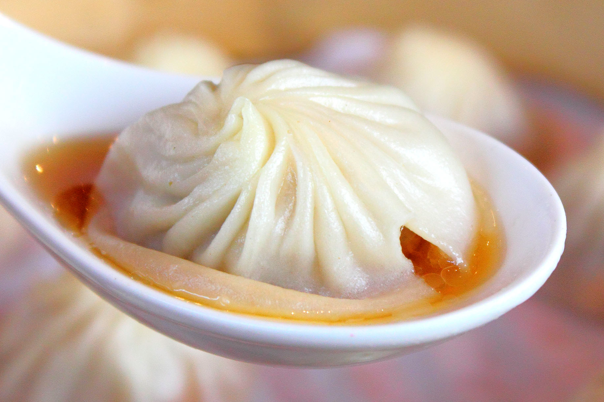
СяолунбаоМаленькі парові пельмені з тонкого тіста, начинені свіжим фаршем, зазвичай свининою, і бульйоном, що утворюється під час приготування. Пельмені мають ніжну текстуру і подаються гарячими, часто з оцтовим соусом і імбиром для додаткового смаку.
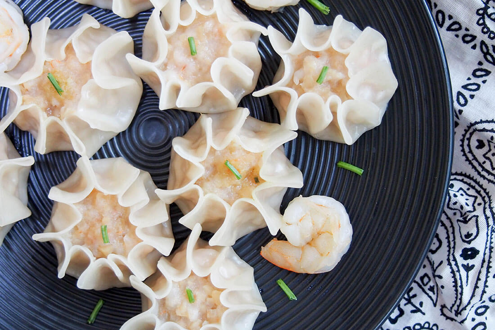
ШумайКитайські пельмені на пару, зазвичай наповнені свининою, креветками або овочами. Тісто у них тонке і відкрито на верхівці, що дозволяє побачити начинку. Шумай часто подається з соєвим соусом або соусом з чилі для додаткового смаку.
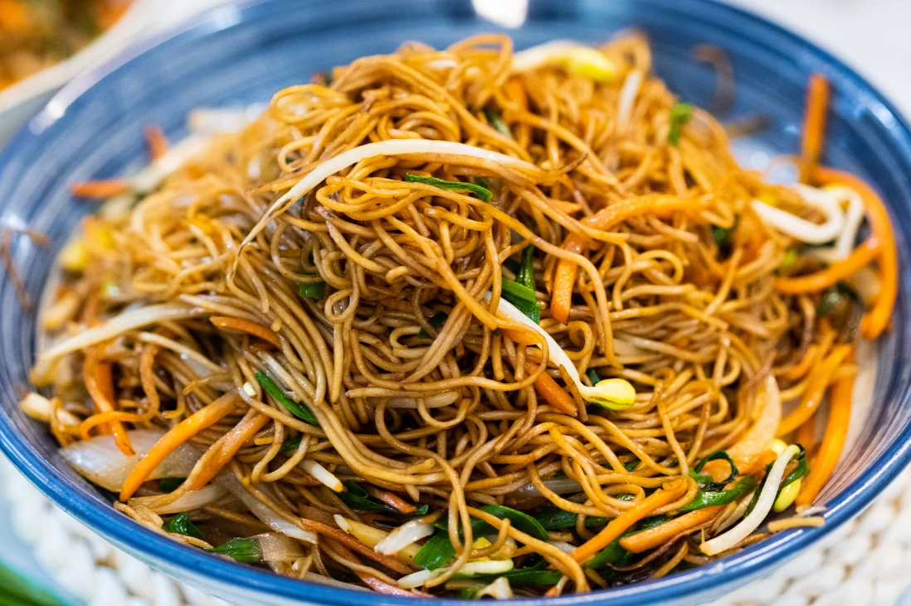
Чоу мейнПопулярна китайська страва, що складається з смажених рисових або пшеничних локшин, які готуються з м'ясом, морепродуктами, овочами та соєвим соусом. Страва має ароматний смак, завдяки швидкому смаженню та поєднанню різних спецій.
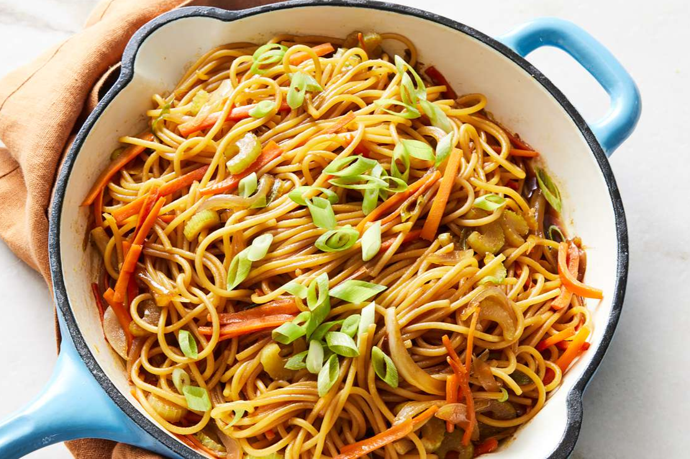
Ло мейнКласична китайська страва, що складається з варених локшин, перемішаних з м'ясом, морепродуктами або овочами. Локшина подається з соєвим соусом, часником, імбиром і часто з додаванням зелені, створюючи смачну та ароматну страву.
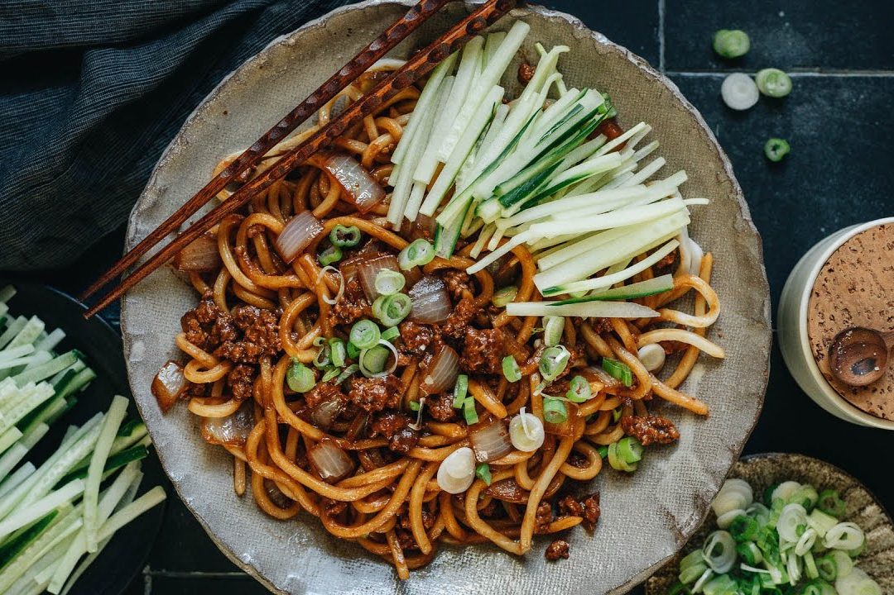
ЧжацзянмяньКитайська страва з пшеничних локшин, поданих з густим соусом на основі ферментованої сої, свинини та овочів. Страва має насичений, солонуватий смак і часто доповнюється свіжими огірками або іншими овочами для контрасту.
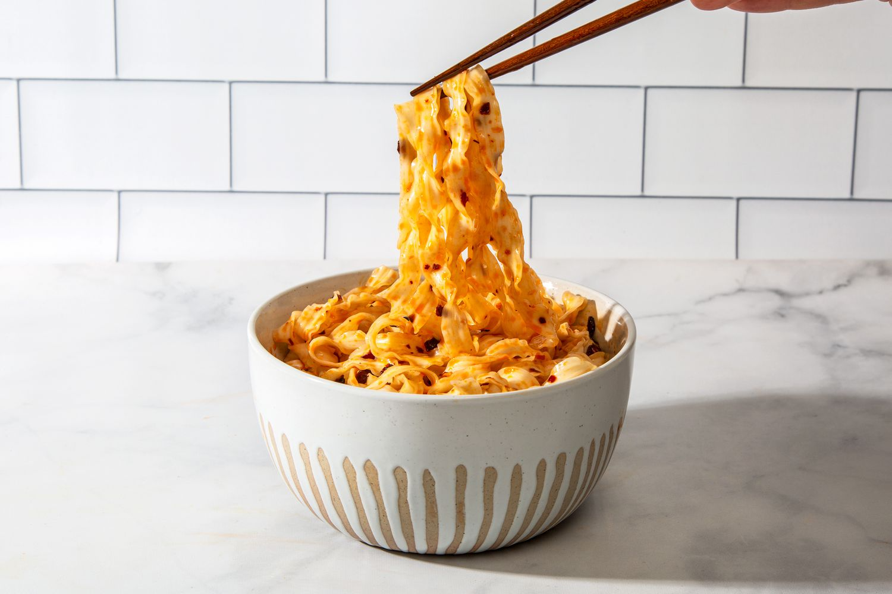
Дао сяо мяньКитайська страва з локшини, нарізаної вручну ножем з великого шматка тіста. Локшина має характерну товсту і щільну текстуру, подається з різноманітними соусами, м'ясом, овочами або бульйоном, надаючи страві багатий смак і насичену консистенцію.

Гостро-кислий супПопулярна китайська страва, що поєднує гострий та кислий смак завдяки чилі, оцту та спеціям. Зазвичай у супі присутні гриби, тофу, яйця, овочі та інші інгредієнти, що надають страві насичену текстуру і аромат.

Ґо цяо мі сяньТрадиційна китайська страва з локшини, яка символізує перехід через міст у культурі. Локшина зазвичай подається з бульйоном, м'ясом (часто яловичина або свинина), овочами та спеціями. Страва має ароматний, насичений смак і є популярною в китайській кухні, особливо в південних регіонах.

Суп із локшиною та яловичиноюСмачний китайський бульйон, в якому поєднуються ніжні шматочки яловичини, локшина та ароматні спеції. Страва має глибокий смак завдяки соєвому соусу, імбиру та часнику, а також часто доповнюється овочами, такими як зелена цибуля чи гриби.
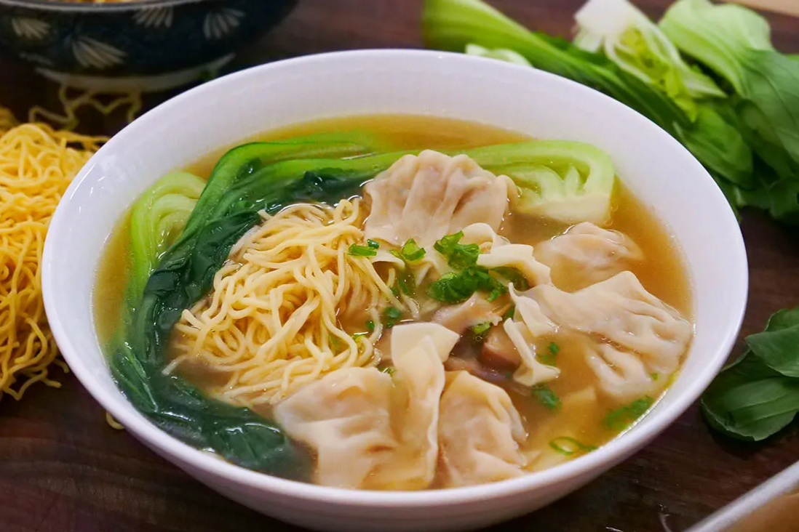
Локшина ВонтонПопулярна китайська страва, що складається з ніжної локшини, поданої в ароматному бульйоні з пельменями вонтон, наповненими свининою, креветками або овочами. Суп зазвичай доповнюється зеленню та спеціями, створюючи легкий і смачний смак.
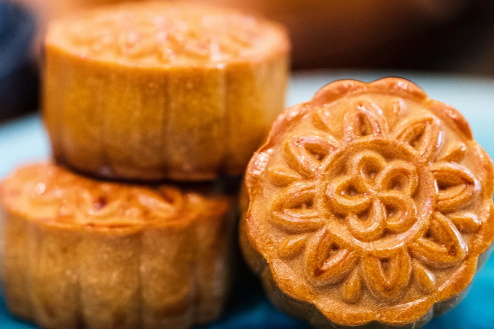
МункейкТрадиційний китайський десерт, що має круглу форму і виготовляється з тонкого тіста, наповненого різними начинками, такими як паста з бобів, солодкий кунжут або яєчний жовток. Мункейк зазвичай подають під час святкування Китайського нового року або свята середини осені.
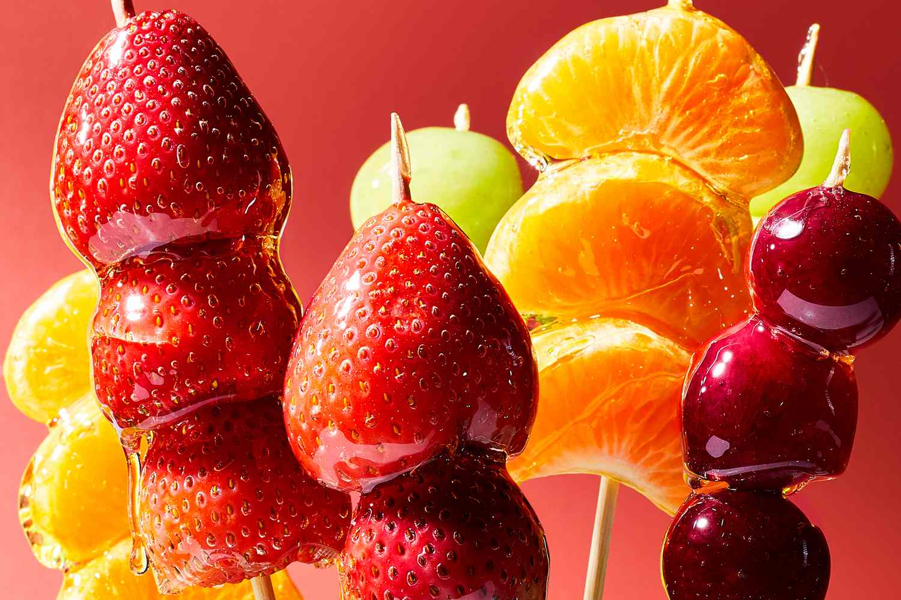
ТанхулуПопулярний китайський десерт, що складається з фруктів, найчастіше ягід, нанизаних на шпажки і покритих карамельною глазур'ю. Після охолодження цукор застигає, утворюючи хрустку скоринку, що контрастує з м'якістю фруктів всередині.
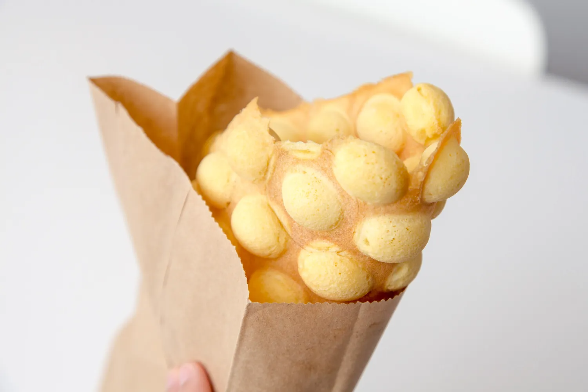
Гонконзькі вафліПопулярний десерт з хрусткою зовнішньою скоринкою та м'якою серединою. Вафлі мають унікальну форму з маленькими круглими осередками і часто подаються з різними начинками, такими як фрукти, шоколад, солодке молоко або морозиво.

Бабл-тіПопулярний тайваньський десерт-напій, що складається з чорного або зеленого чаю, змішаного з молоком або фруктовим сиропом, і подається з великими тапіоковими кульками, що додають йому характерну "бульбашкову" текстуру. Напій часто прикрашається льодом і подається через велику соломинку.